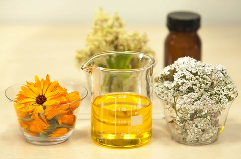

Natural Remedies
The cure from nature
SKIN CARE REMEDIES
Natural Remedies for Glowing Skin
Turmeric
Make yourself a face mask using turmeric, which will really do miracles for healthy and shiny skin, as work wonders for your acne.
1 tbsp fresh aloe vera gel, 1 tbsp honey, and 1 tbsp chopped turmeric are all you need. To make a thick paste, stir it thoroughly.
Apply to your face and neck and leave for half an hour to work.
Finally, wash it off with warm water and finish with a face cream or coconut oil.
Papaya
The papaya is one amazing superfruit that has the ability to fix all the imperfections on your skin. The best of all, masks made from papaya are suitable for the whole body.
Vitamins A, B, C, and E, as well as potassium and magnesium, are all present. This fruit helps to prevent skin aging and provides smoothness, luster, and strength to the skin. Finally, papaya is high in antioxidants, which assist to reduce inflammation.
The combination of papaya, coconut oil, and honey for your skin is an explosion of nourishing and hydrating ingredients.
1 papaya, 1 tablespoon coconut oil, half a banana, 1 tablespoon honey, and 1 pineapple are mixed together. In a food processor, combine all of the ingredients until they form a smooth mixture. Apply to a clean face. Allow 15-20 minutes for the mask to take effect before rinsing. Your skin will be revived, softer and more radiant than ever!
Cucumber
Cucumbers are beneficial to the skin due to their high water content as well as the fibers that aid in the removal of toxins. They're also high in vitamin C, which helps hydrate the skin and give it a lustrous, glowing appearance.
Instead of eating them, you may reap the advantages by applying a cucumber mask to your face to improve the texture of your skin.
Rinse the cucumber thoroughly before slicing it and blending it. Blend in the plain yogurt until you have a smooth paste.
Apply the cream to a clean face, neck, and neckline, then wait half an hour before washing your face with warm water. Repeat the treatment twice a week for a total of three times.
Green Tea
Green tea it's not just for drinking, you can also use it in your skincare regimen as part of your facial masks - it's just perfect for such mixtures.
To begin, extract the contents from three different herbal tea bags, place them in a bowl, and add a handful of flax seeds. Boil one bag of green tea and then set aside to cool. Take a thick cotton pad and soak it in green tea before applying it to your face. Place the tea and flaxseed mixture on top, cover with another cotton pad, and set aside for 30 minutes. Using cold water, rinse your face. Your skin will be supple, radiant, and grateful.
Figs
Figs are an excellent topical ingredient since they may be used to build a moisturizing, antioxidant-rich face mask. Apply 2-3 mashed figs to your face with 1 tablespoon of olive oil and watch your skin glow. Allow 10 to 15 minutes for the mask to take effect. Rinse well with warm water.
You can do this process up to three times per week.
Home Remedies for Dry Skin
Rose Water
If you have dry skin, rose water is an amazing remedy for you. I guess you wonder how you can use rose water to improve your skin? Well, it has numerous benefits such as softening your skin and giving it a natural, healthy glow. It helps clear up your skin because it gets deep into your pores and keeps it well hydrated.
But what if you have a skin sensitivity? Don't be concerned! Because rose water is so mild, you can still use it, and the greatest part is that it has no negative effects. Cleopatra is said to have used rose water in her skin care routine.
IIf you're not sure how to use rose water, here's a recipe for hydrating your skin.
1 tbsp coconut oil, 3 tbsp rose water, and 1 tbsp glycerin are all you'll need. In a small bottle, combine all of the ingredients and shake well. Apply the mixture to your skin after 2 or 3 minutes.
This can be done twice a day. It's wonderful for your skin because the glycerin and coconut oil moisturize your skin while the rose water refreshes you. If you have dry skin, this recipe will quickly rejuvenate it.
Castor Oil
Castor oil, in the science world also known as Ricinus cimmunis, is a vegetable oil that comes from squeezing castor seeds. It's a natural ingredient that helps you fight off dry skin.
Castor oil includes ricinoleic acid, which has numerous health benefits.
It can be used to treat inflammatory skin, sunburns, acne, and even scars. The oil penetrates the scar tissue and promotes the formation of healthy cells in the surrounding area. You must utilize the method on a regular basis for it to work.
Castor oil is also used in cosmetic items to hydrate the skin. However, because some moisturizers contain inflammatory components such as preservatives, fragrances, and dyes, castor oil alone or blended with coconut oil is recommended. For dry skin, oil can be an effective moisturizer.
Here's a homemade mixture you can use.
Combine 1 tbsp castor oil and 2 tbsp coconut oil in a mixing bowl. Dip a cotton pad in the mixture and lay it on the inflamed area for 15 minutes to see if it helps. Wash your face with room temperature water after that.
Lavender Oil
Lavender oil is always a favorite among essential oils, maybe because of its anti-inflammatory properties and therapeutic effect for dry skin in particular. But, it also helps fight acne, eczema, injured skin, wrinkles etc.
Most importantly, it aids in the treatment of migraines, headaches, stress, and tension.
If your pores are clogged, the oil will destroy the bacteria, leaving your skin hydrated and less likely to produce a pimple. Lavender oil can be used as a primer or a foundation product for flawless application due to its anti-inflammatory effects.
Lavender helps to keep the skin's moisture barrier in check, preventing it from becoming overly oily or dry. This oil should be kept in your pocket on days when there are strong winds or too much sun.
Lavender oil may be used to both calm and hydrate the skin. Take a bottle of lavender oil, a hot bath, a few drops of lavender oil when the water starts to steam, deep breathes, and relax. After your bath, massage your skin softly with a few drops of lavender oil combined with coconut oil as a DIY massage oil to get it clean and glowing. Enjoy!
Almond Oil

Almonds are very powerful, not only because they are a healthy snack, and make tasty milk, but also the oil can do wonders for your skin.
Almond oil has a lot of health benefits for your skin. Let's have a look at them: Vitamin E and A, potassium, zinc, fatty acids, and protein are all abundant.
Almond oil, which is high in Vitamin E, can help to cleanse your skin of dead skin cells, leaving it soft, smooth, and wrinkle-free.
Fatty acids hydrate the skin, reduce sebum production, and cure damaged skin. If you have dry skin, don't despair; almond oil will always come to your rescue.
It's also an excellent natural makeup remover thanks to its antimicrobial characteristics.
Contact Us
Send us a message
Sitemap
All our pages
You can visit the links for more informations